WorldSkript
A manuscript editor with real pages, chapters, a Scrapyard for scenes you’re not ready to cut, and history for every chapter.
Desktop app for Windows, macOS and Linux
Worldscape keeps your manuscript, story notes and mood boards in a single project, side by side. It works offline, and your files stay on your computer.


What’s inside
Open a project and you land in Write and Plan together. Pick any two of the three tools to work side by side, or give one the whole window.
A manuscript editor with real pages, chapters, a Scrapyard for scenes you’re not ready to cut, and history for every chapter.
Characters, places and lore, relationships, a storyboard, a timeline and calendars, all linked to the chapters you write.
A free canvas for pictures, notes and colour swatches. Start a board for any character or place, or keep it independent.
Write
WorldSkript lays your text out on real pages at the trim size you choose, so you see how the book will read while you write it.

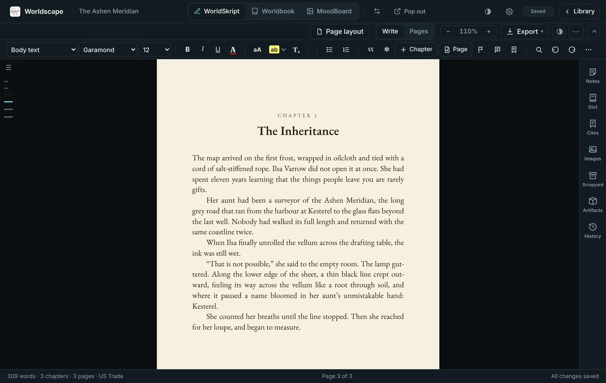
Plan
Write a chapter and it appears on the Worldbook storyboard with its word count. Rename it, reorder it or set it aside in either tool and the other follows.


Organise
Keep your projects on a shelf or in a grid, and gather the books of a series into a collection. Each project is a folder you choose, on your own disk, so your work is never locked inside the app.
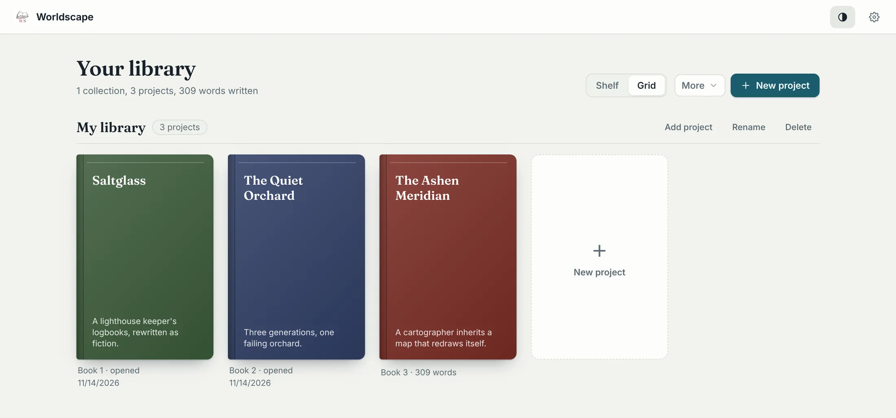

Download
Pick the installer for your computer. You only need to download once, because the app updates itself afterwards.
First install
Worldscape isn’t code-signed yet, so Windows and macOS may warn you the first time you open it. The steps here get past that. After the first install, the app updates itself.
Run the installer. If a blue “Windows protected your PC” window appears, choose More info, then Run anyway.
.dmg and drag Worldscape into Applications.xattr -cr /Applications/Worldscape.appFor the AppImage, right-click the file, open Properties and allow it to run as a program (or run chmod +x on it), then open it. The .deb and .rpm files install with your package manager.
Updates
Installed copies of Worldscape look after their own updates, and they never change anything without asking.
Shortly after the app starts, and again every six hours, it looks for a newer version.
When a new version is ready, a small bar appears. Nothing installs on its own.
Select Restart and update. Worldscape saves your chapters and every open pane first. If anything can’t be saved, the update is cancelled and nothing changes.
Updates are signed. The app only accepts packages signed with Worldscape’s own key.
Quickstart guide
Write your manuscript, build your world and gather your inspiration in one desktop app. Screenshots come from a demo project, The Ember Crown.
The three apps and how they fit together.
Worldscape keeps everything about a book in one place. Each project links a manuscript to its world, and you work on both side by side.
| App | What it is for |
|---|---|
| WorldSkript | Writing the manuscript: chapters, page layout, notes, dictionary, citations, images and history. |
| Worldbook | Your story bible: characters, places and lore, relationships, storyboard, timeline and calendars. |
| MoodBoard | Free-form boards of pictures, notes and colour swatches linked to your characters and places. |
You can open any app on its own (full view) or two together (split view).
Your files stay yours. Worldscape works fully offline. Every project is saved in a folder you choose on your own computer.
Install, first-run warnings, updates and your first five minutes.
.exe or .msi), macOS (.dmg) or Linux (.deb, .rpm or .AppImage). Worldscape is distributed only as installation files.Worldscape is not code-signed yet, so Windows and macOS may warn you the first time you open it.
.dmg and drag Worldscape into Applications. Then run xattr -cr /Applications/Worldscape.app once in Terminal. If macOS still blocks it, choose Open Anyway in System Settings → Privacy & Security.chmod +x) and open it. The .deb and .rpm files install with your package manager.Worldscape checks shortly after it starts and then every six hours. When a new version is ready, a small bar appears and nothing installs until you select Restart and update. Worldscape saves your chapters and open panels first, and cancels the update if anything cannot be saved. Updates are signed, and the app only accepts packages signed with Worldscape’s own key. You can also check at any time in Settings.
Collections, new projects and settings.
The start page is your Library. Use Shelf (book spines) or Grid (covers) to browse.
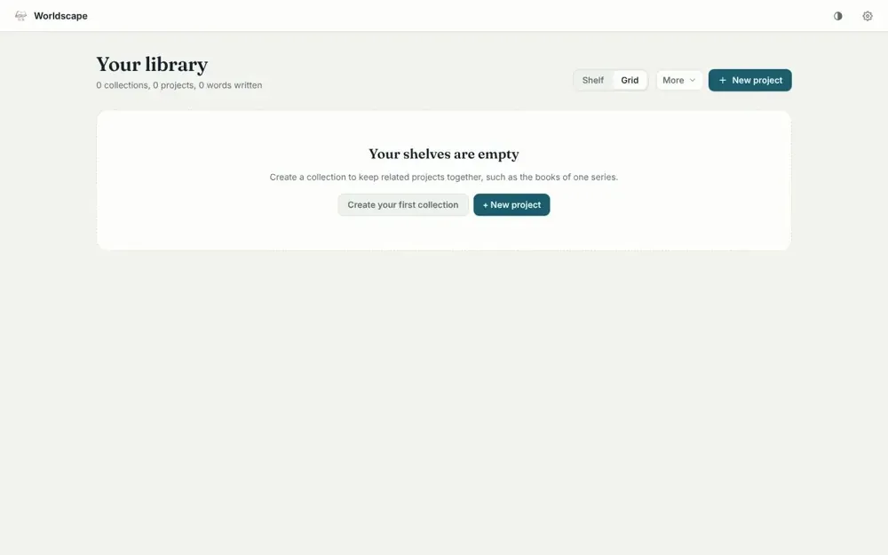
Your project now appears on the shelf, and you can drag books between collections to reorder them.

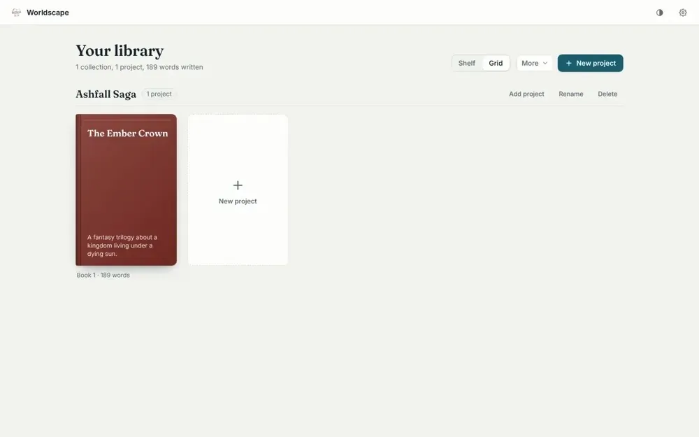
Open Settings (gear icon, top right) to check for updates and to change any keyboard shortcut. If two actions share a key, they are outlined in red until you fix it.
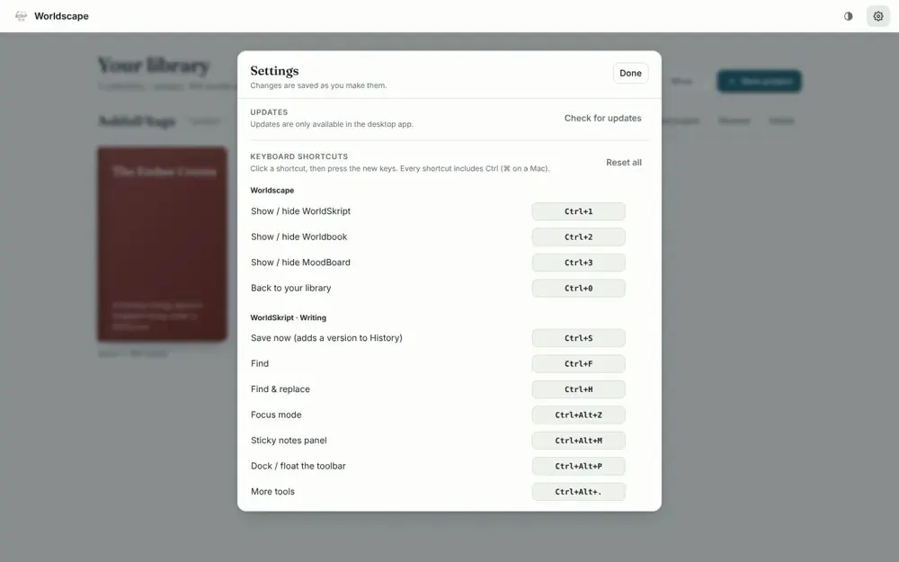
Appearance. The half-circle button in the top bar switches the whole app between Light, Dark and High contrast, or follows your system setting.
Write, Plan and MoodBoard, full view and split view.
Open a project (double-click it) and you land in Write + Plan split view.

| Action | How |
|---|---|
| Show an app | Select WorldSkript, Worldbook or MoodBoard in the top bar. Select two to see them side by side. |
| Show one app only | Double-click its button. |
| Switch directly | Ctrl/⌘ + 1 Write, Ctrl/⌘ + 2 Plan, Ctrl/⌘ + 3 MoodBoard. |
| Swap left and right | The ⇄ button. |
| Second monitor | Pop out moves a pane into its own window. |
| Back to the library | The Library button, or Ctrl/⌘ + 0. |
The Saved indicator in the top bar tells you that all apps have saved.
Page layout, chapters, notes, flags and events, citations, history and more.
Select Page layout to set up the whole book. A live preview shows your changes.
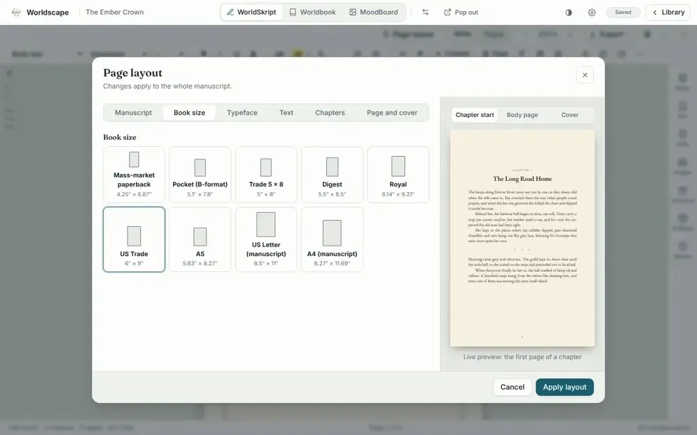
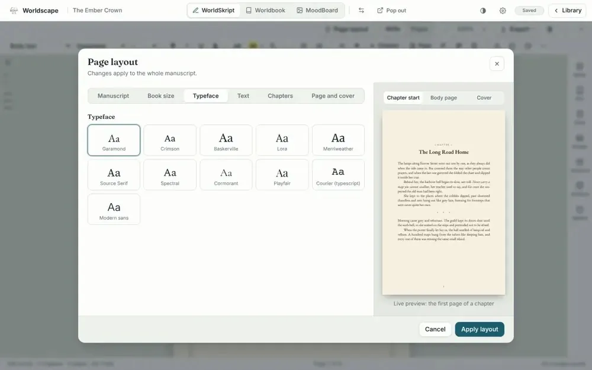
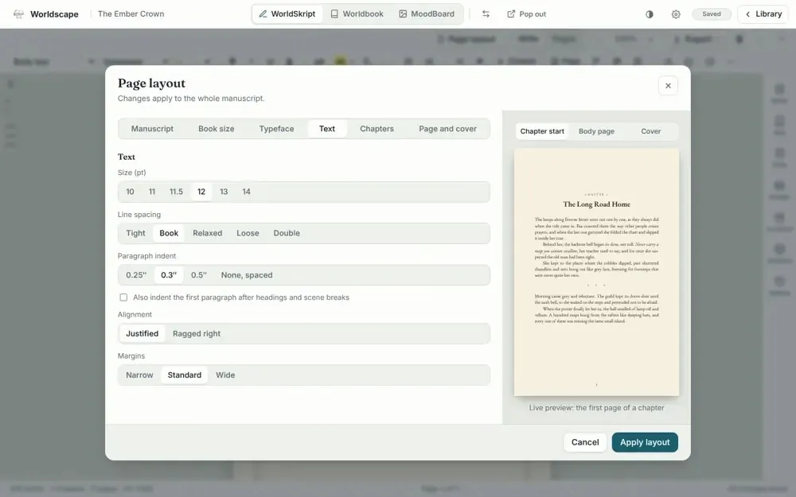
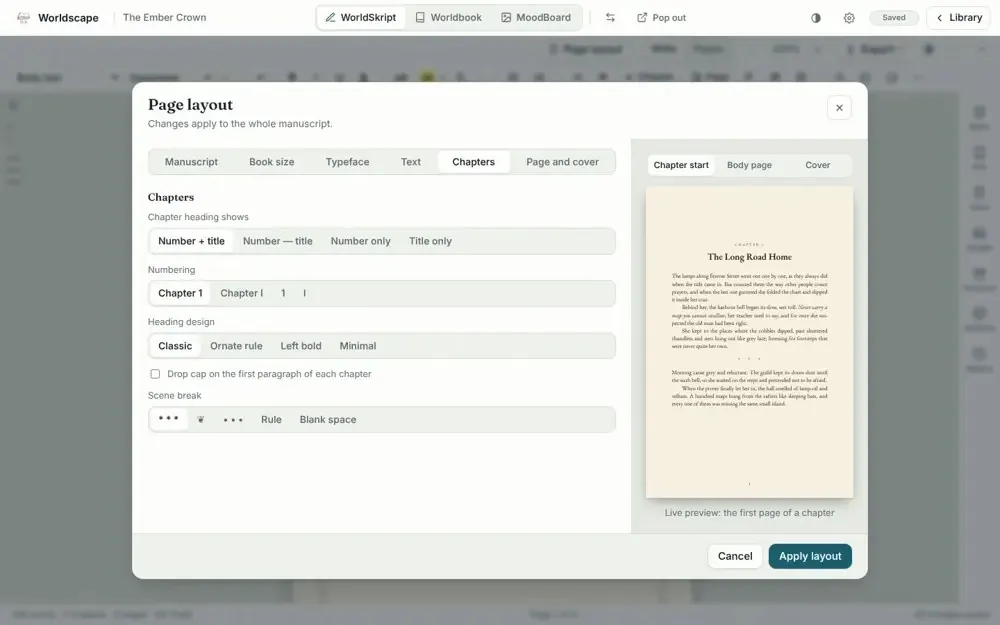
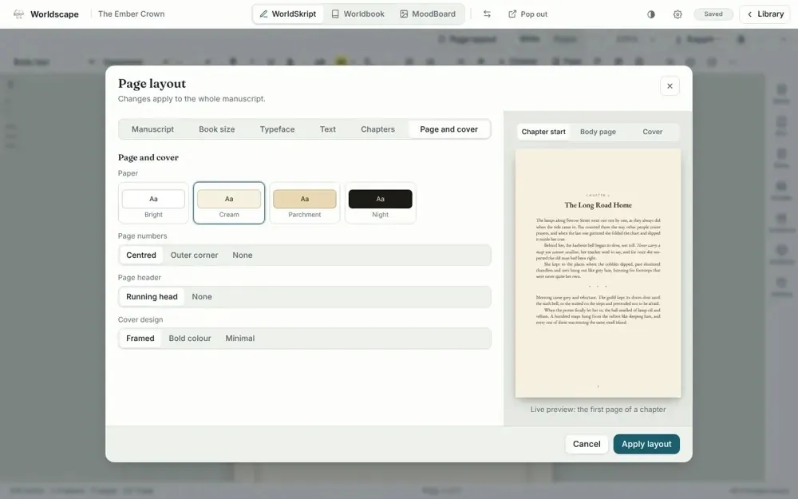
Type directly on the page. Add a chapter with the Chapter button, or press Enter three times. Chapters start on a new page and appear in the Index on their own. Select text to:

The ☰ button opens Chapters and Events. Jump to any chapter, set one aside, or send events to Worldbook.

An event is a key moment in a chapter. A flag in WorldSkript and an event in the Worldbook storyboard are two views of the same moment, and you can start from either side. Click inside a chapter first: the Events tab only lists the chapter your cursor is in.
You can also link a flag to a Worldbook event while you create it: in the Add flag dialog, pick the event from the Worldbook event list.
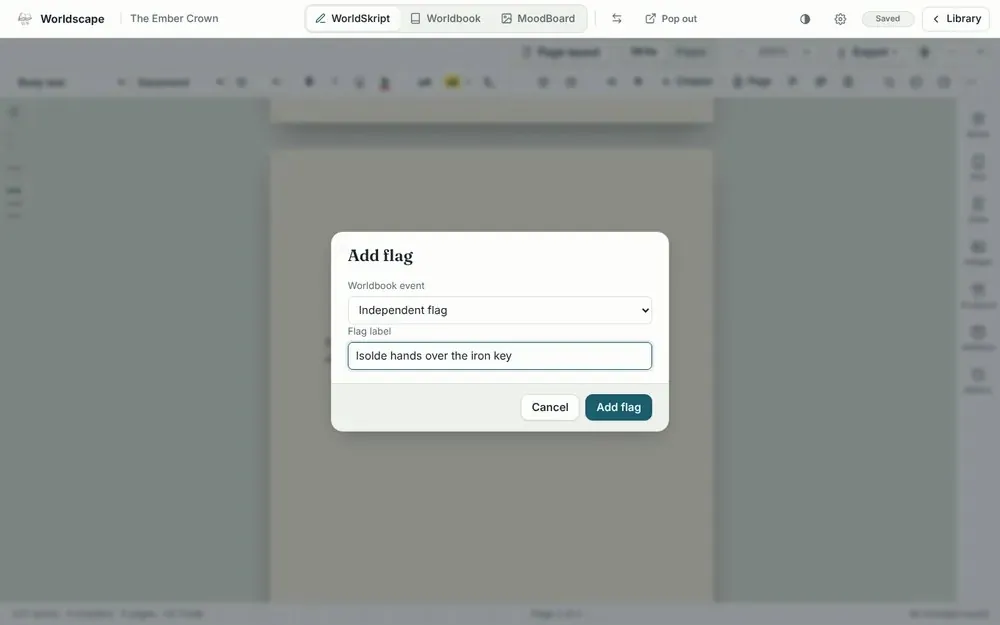


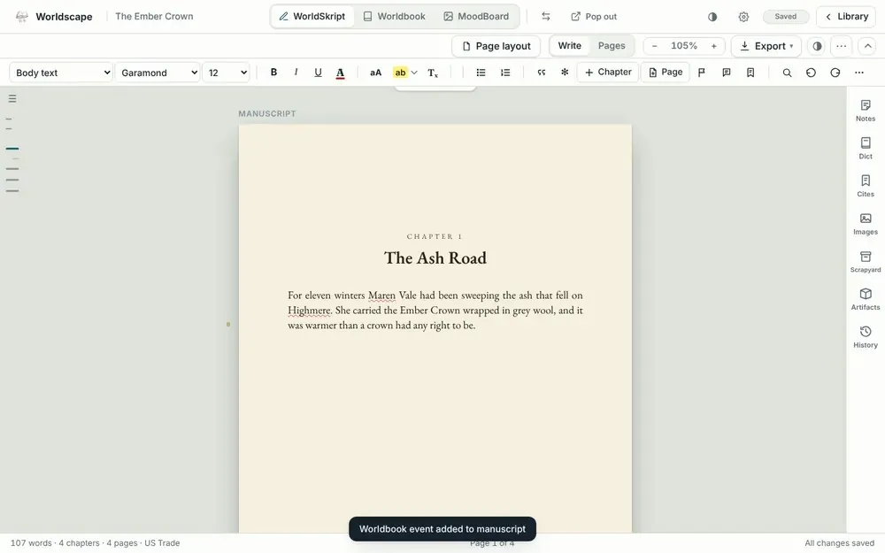
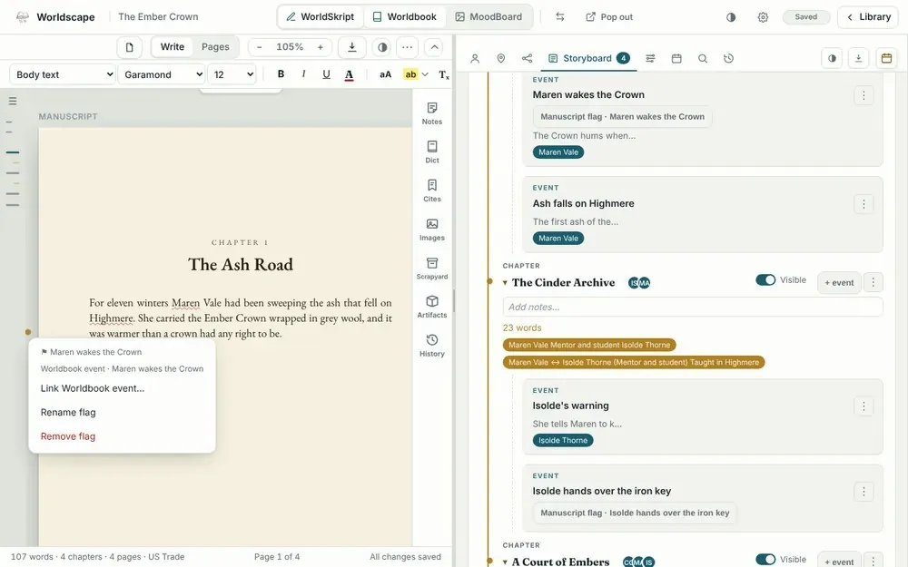
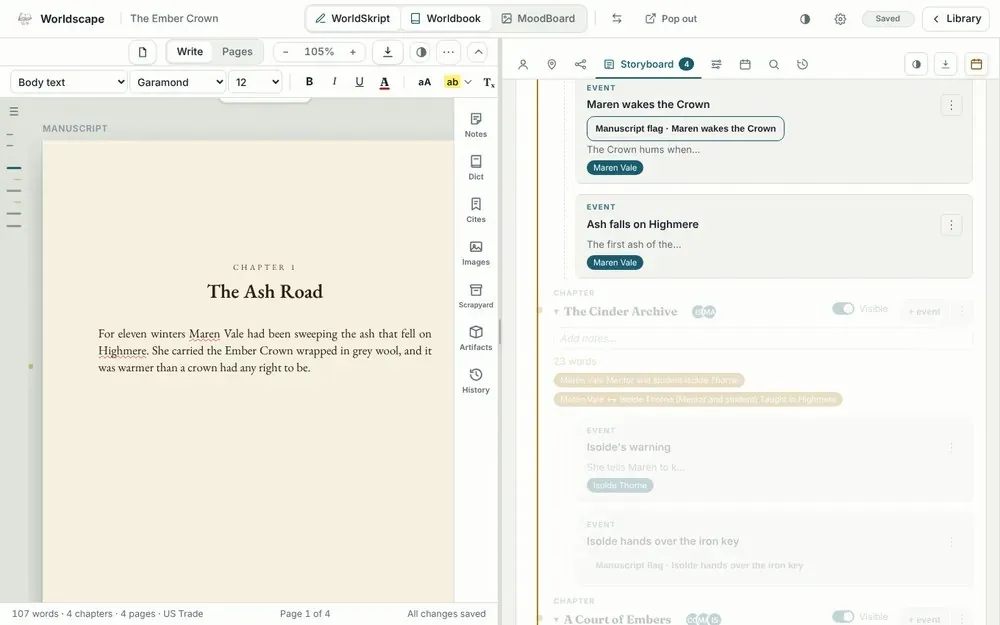
The thin rail on the far left lists the cover, the index, every chapter and every flag as small dashes, so you can move through a long manuscript quickly. Long dashes are chapters and short gold dashes are event flags. Hover over one to see its name and select it to jump there. The dash for the part you are reading is highlighted.
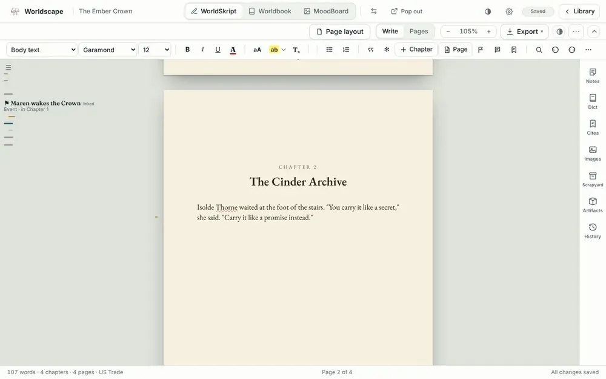
The Artifacts panel lists the characters, places and lore involved in the chapter you are reading, taken from Worldbook.
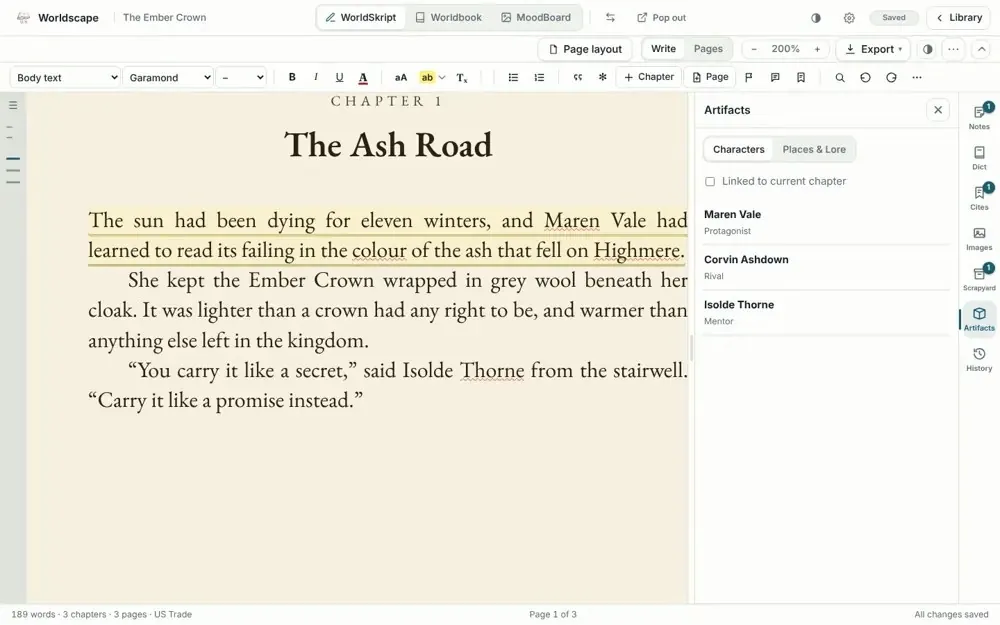
Add your own words with a definition, or import a dictionary. With spell check on, right-click a red word to correct it or Add to dictionary.

Add sources by hand or import them from Zotero, then cite them in the text. The bibliography is added at the end of the book and to the index.

Not sure about a chapter? Send it to the Scrapyard. Restore puts it back in its original place, and Place… lets you choose another position. Its history is kept.

Every chapter keeps saved versions. Save one yourself with Save a version (or Ctrl/⌘ + S); WorldSkript also saves them automatically. Select a version to compare it to the current text, then restore it if you wish.

The … menu holds Dictionaries, Spell check (on or off), Focus mode (dims the menus while you type) and Backup. Use Export to create a Word or EPUB file.
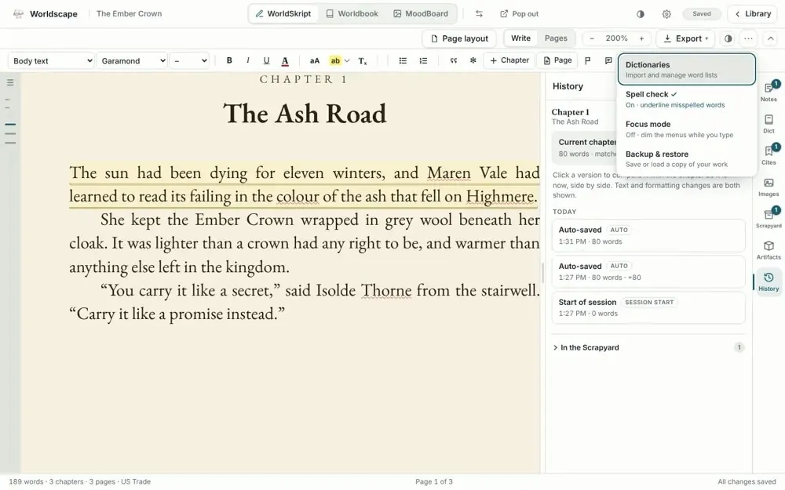
Use + Extra page (the small button under the index, and between extra pages) to add a prelude, a dedication, notes or a map page before the first chapter.
The first screenshot shows the index before an extra page. After adding the extra page Prelude, it appears in the index, and the page itself sits in front of Chapter 1.


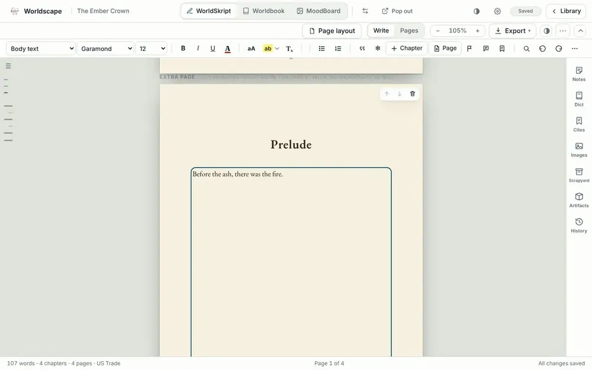
Images. Place pictures in your manuscript or on extra pages from the Images panel. Placed images can be resized, aligned and captioned.
Characters, places, relationships, storyboard, timeline and calendars.
Worldbook has eight sections in its left menu.
Select + New character and fill in name, role, appearance and backstory. You can also record how a character changes from chapter to chapter.

Cities, landmarks, factions, magic systems and items. Link each entry to a chapter and, if you like, to a calendar.

Record how characters, places, lore, chapters and events relate, and how those relationships change over the story. The graph shows connections, and you can filter by entity or chapter.
Besides a relationship between two entities, you can link a relationship to another relationship, or a relationship to an entity (a place, an event, a calendar event).
A link is drawn as a dashed line from the middle of the source relation. Below the graph, all links are listed under Links, and they also show up as gold chips on that chapter in the Storyboard.


Arcs, chapters and events. Chapters created here appear in WorldSkript, and the other way round. Add events to a chapter here, and place them in the manuscript wherever you want. Scroll down past the progress board to the arcs. An arc holds its chapters, and each chapter holds its events:
See “Events: send and add in both directions” in section 5 for how events move between the two apps.


See your whole story at a glance: chapter lengths, events and relationship shifts, in order.
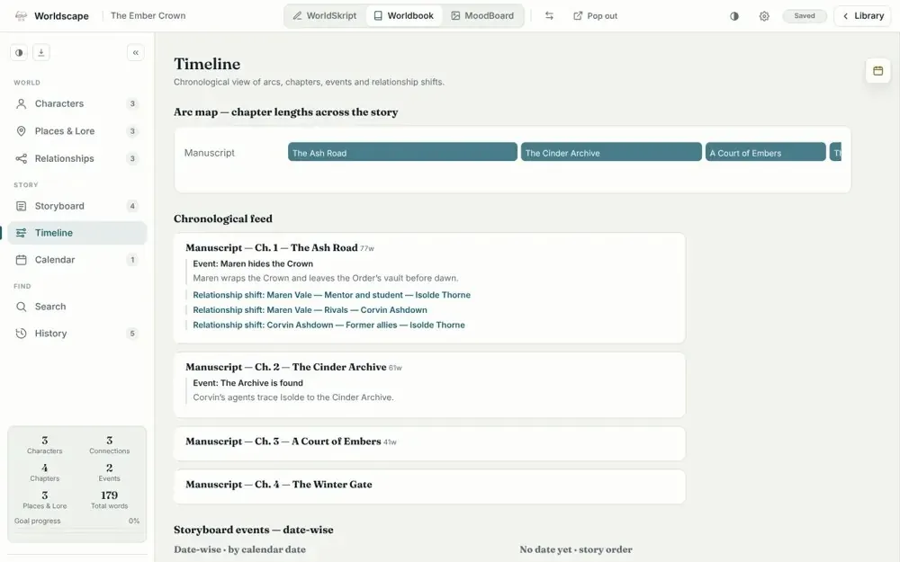
Use the standard calendar or create your own fantasy calendar with custom months, weeks and named days.

Search finds anything in the world (use #tags). History keeps automatic snapshots of your world that you can restore.


Boards of pictures, notes and colour swatches.
Each character, place or lore entry can have its own board. Add images, notes and colour swatches. A palette is built from your pictures, and Tidy arranges everything into a neat collage.
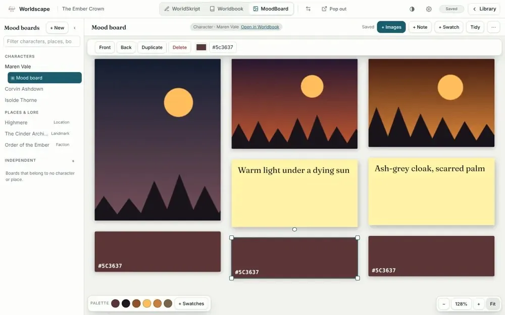
What is shared between the three apps.
The project folder and backups.
Everything is saved in your project folder, so you can back it up or sync it like any other folder:
<Project name>/ worldscape.json project settings and links manuscript/ your WorldSkript drafts world/ your Worldbook file moodboards/ your boards and pictures
Removing a book from the library only removes its card. Your files are never deleted.
Backups. Use Backup & restore in the WorldSkript … menu to save or load a copy of your work.
Default keyboard shortcuts.
Every shortcut can be changed in Settings. Defaults:
| Action | Shortcut |
|---|---|
| Write / Plan / MoodBoard | Ctrl/⌘ 1 / 2 / 3 |
| Back to library | Ctrl/⌘ 0 |
| Save a version | Ctrl/⌘ S |
| Find / Replace | Ctrl/⌘ F / H |
| Add note | Ctrl/⌘ Alt N |
| Sticky notes panel | Ctrl/⌘ Alt M |
| Flag a major event | Ctrl/⌘ Alt E |
| Cite a source | Ctrl/⌘ Alt R |
| Scene break | Ctrl/⌘ Enter |
| New page | Ctrl/⌘ Alt Enter |
| Paragraph styles | Ctrl/⌘ Alt 0–3 |
Happy writing.